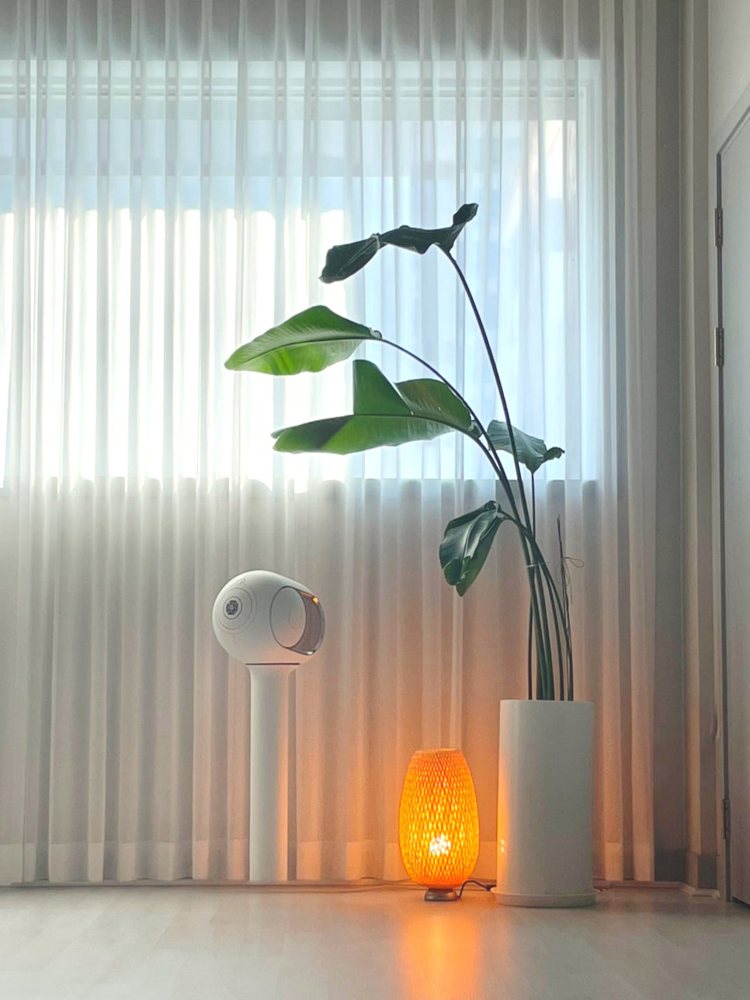

처음 오는 날, 뭘 잘해야 하나요?
아무것도 잘 안 해도 돼요.
유연하지 않아도, 운동을 오래 쉬었어도,
첫날이라 어색해도 괜찮아요.
저는 모든 분의 자세를 하나하나
직접 봐드리고 싶어서 이 스튜디오를 열었어요.
큰 곳에서 뒤에 앉아 혼자 따라가는 수업이 아니에요.
잘하려고 애쓰지 않아도 괜찮아요.
처음 오시는 날부터 옆에 있을게요.

체험수업, 어떻게 신청해요?
아래 버튼으로 네이버 예약하거나,
전화 · 인스타 DM으로 연락주세요.
원하는 날짜와 수업을 말씀해 주시면 돼요.
📞 010-9773-4256
📷 @sara_yoga_studio
체험수업 비용은 없어요. 수강 결정은 직접 경험하고 나서 하셔도 됩니다.
어떤 수업을 체험할 수 있나요?
아래 수업 중에서 원하시는 걸 선택해 주세요.
모르겠으면 예약 시 말씀해 주시면
제가 추천해 드릴게요.
| 수업 | 특징 |
|---|---|
| 빈야사 | 호흡과 동작을 연결하는 흐름 요가. 활동적. |
| 하타플로우 | 기본 자세 중심. 요가 처음이신 분 추천. |
| 인사이드플로우 | 음악에 맞춰 움직이는 플로우 요가. 감성적. |
| 도구테라피 | 폼롤러·블랙롤로 뭉침을 풀어주는 수업. |

뭘 챙겨오면 되나요?
매트는 스튜디오에 있어요.
요가복이 없어도 돼요 —
움직이기 편한 옷이면 충분해요.
물병을 가져오시면 좋고,
수업 2시간 전에는 식사를 가볍게 하는 게 좋아요.
사라요가는 어디에 있나요?
대전 중구 계룡로 874번길 18, 3층
서대전네거리역 4번 출구에서 도보 2분이에요.
